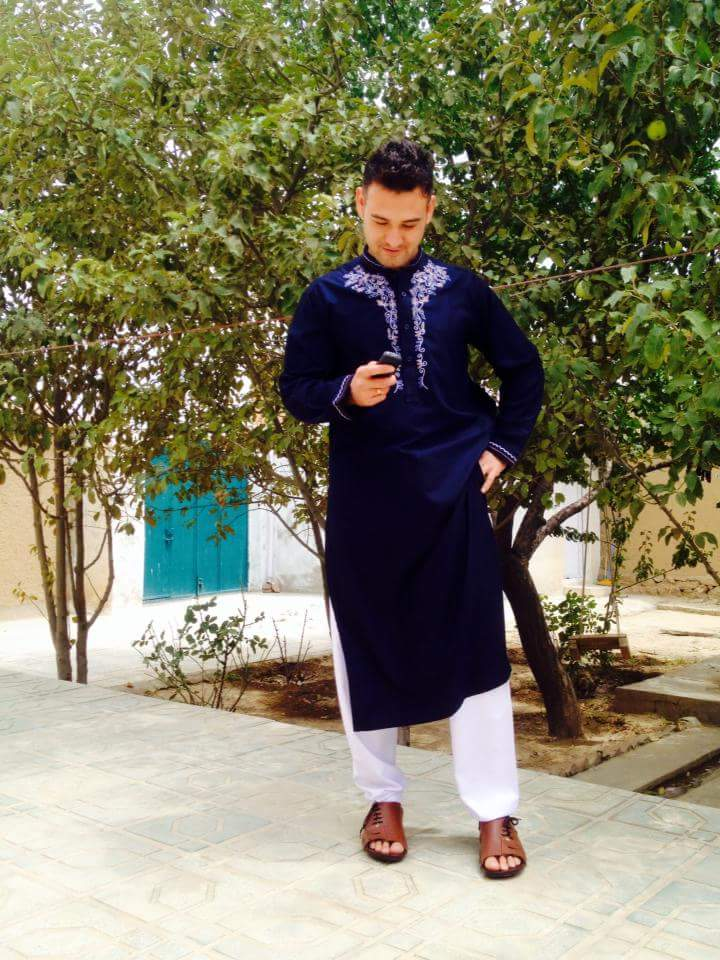

About Me

My Name is Mujtaba Elia. It is twoo years i am imagrated from Afghanistan to the
United States I got my bachelor degree in cinema at Kabul University,
Fine Art Faculty. When i moved to the US,
i found out that it is to hard to work in cinema feild in the Unite States.
That requires alot of money. After film directory,
i always had intrest in computer science. First i started learning ESL
in ARC comunity college. I found out that if i continue in ARC, it will take more than 5 years to
get my bachelor degree in computer science. Because i need to learn English language first an than
i can start my major. I was looking for a short tearm course which can teach me programing. Finally
i found UC Davis Extension Boot Camps. I started learning programing in US Davis Extension to reach
my goal and I wish to find a good job after I graduated.I found out that if
i continue in ARC, it will take more than 5 years to
get my bachelor degree in computer science. Because i need to learn English language first an than
i can start my major. I was looking for a short tearm course which can teach me programing. Finally
i found UC Davis Extension Boot Camps. I started learning programing in US Davis Extension to reach
my goal and I wish to find a good job after I graduated.